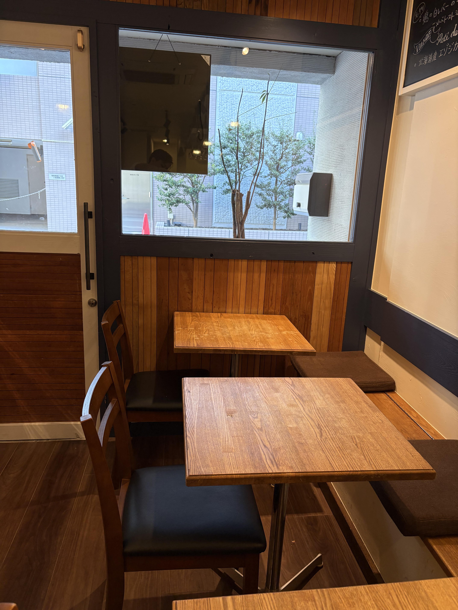
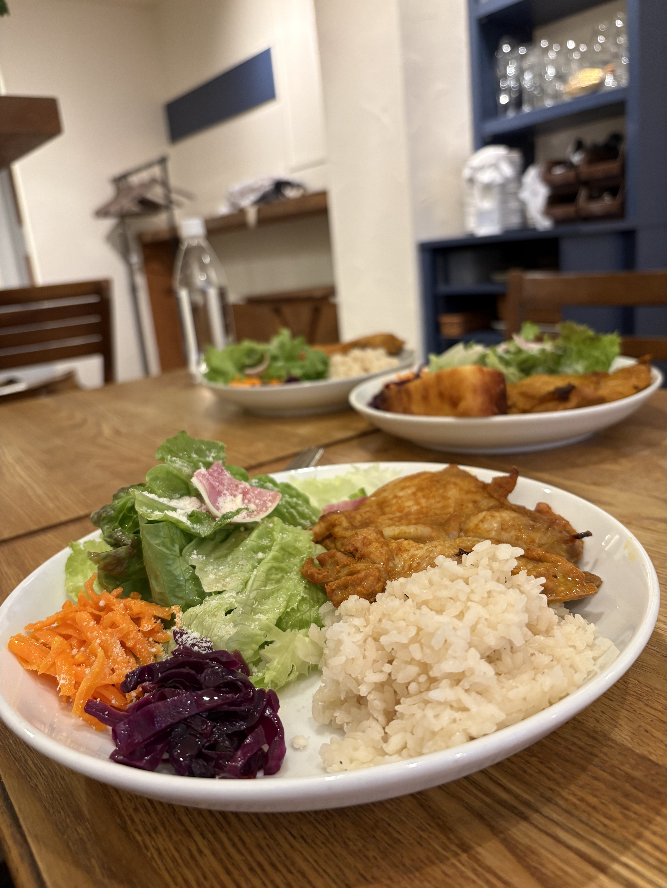
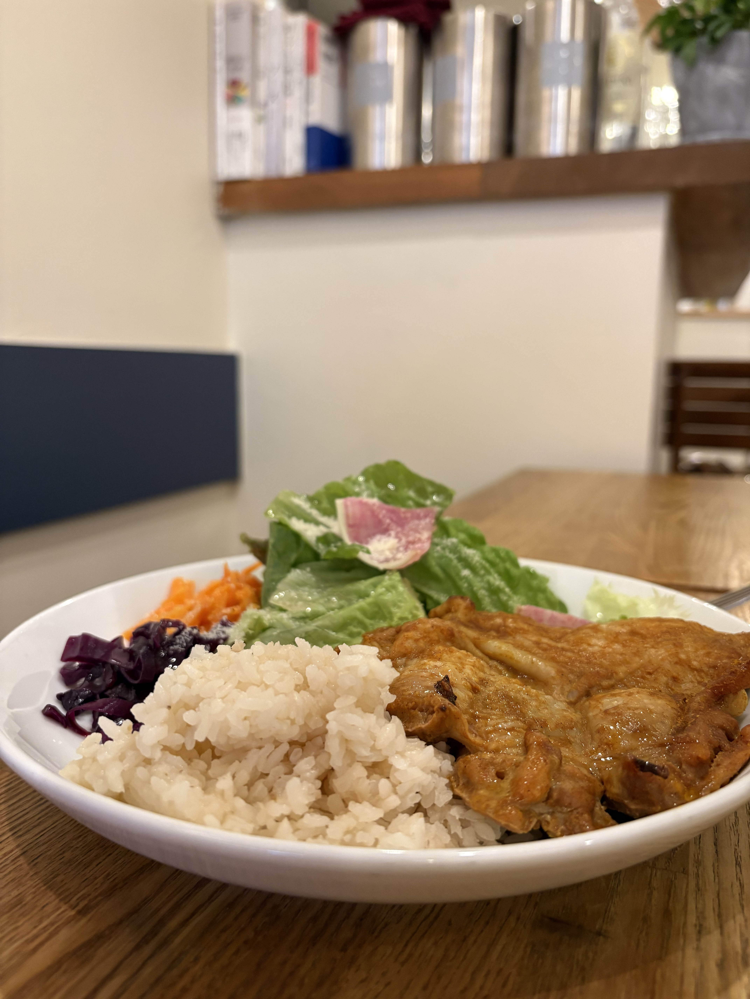
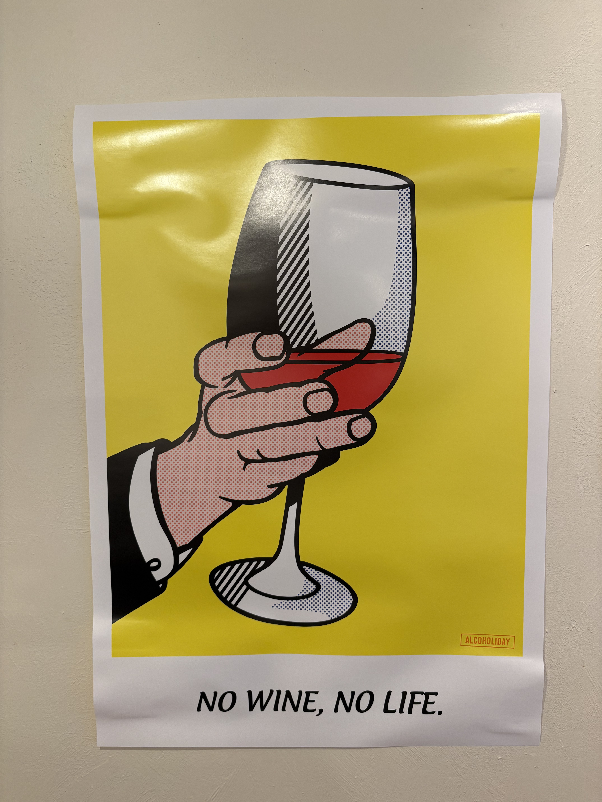
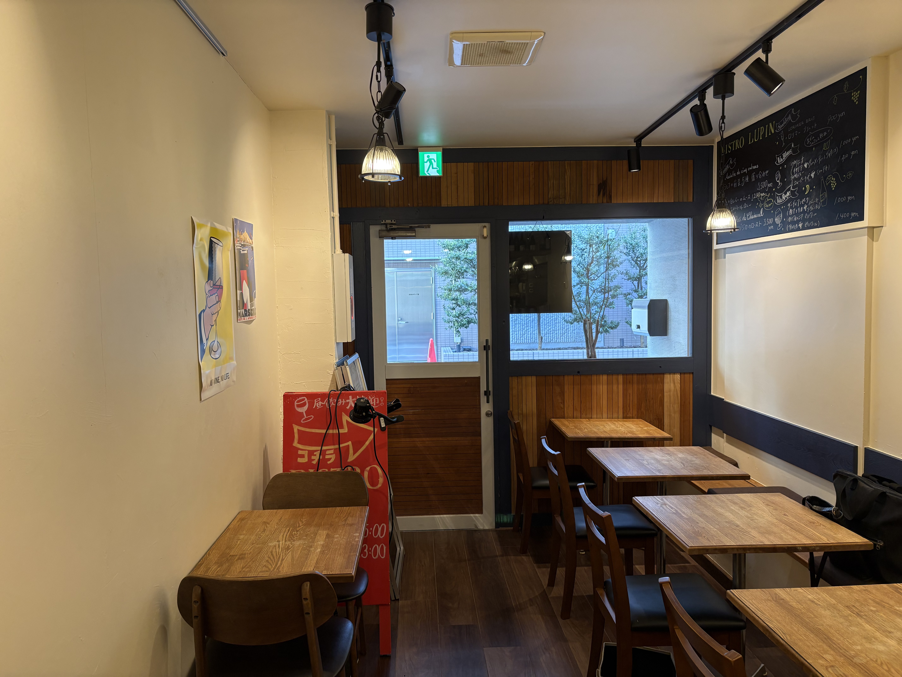
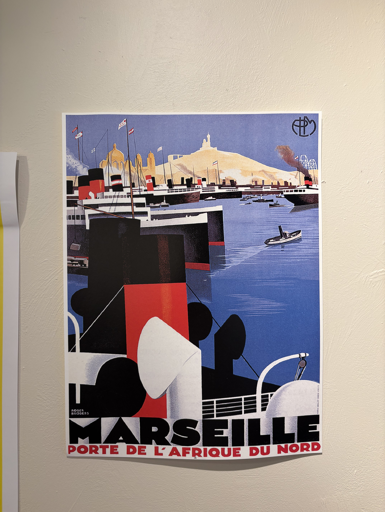
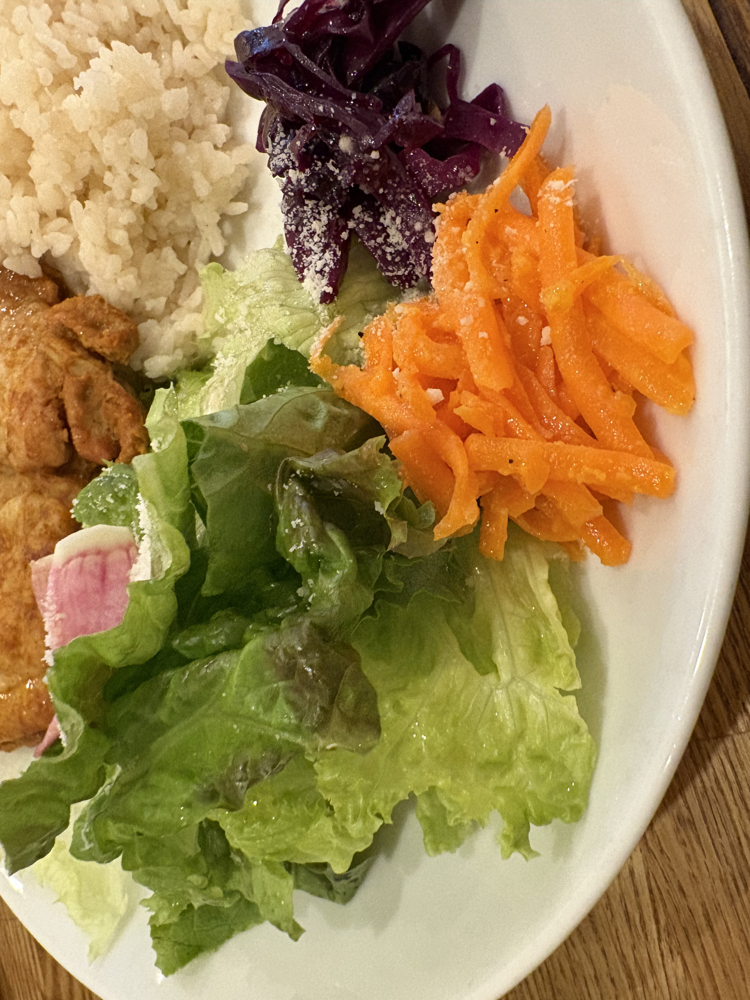

CONCEPT
BISTRO LUPINは、東京・日本橋に佇むパリ風の隠れ家ビストロです。
蝦夷鹿をはじめとしたジビエ料理や、スパイスが香る本格フレンチを。ソムリエが厳選した30〜40種のワインとともに、カジュアルに楽しんでいただけます。
女子会・記念日・接待・貸切と、どんなシーンにも対応。18席のこぢんまりとした空間で、特別なひとときをお過ごしください。
GALLERY






ACCESS
RECRUIT
BISTRO LUPINでは、一緒に働く仲間を募集しています。
フレンチへの情熱を持つ方、ぜひご応募ください。
ご応募・詳細のお問い合わせはお電話にて承ります。
📞 03-5962-3906